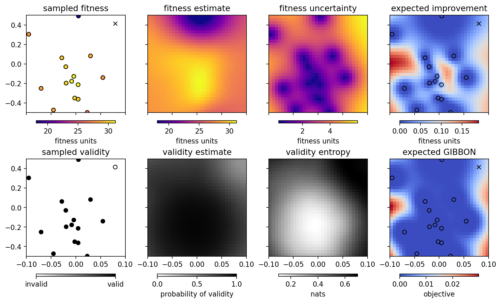

Optimize the vertical KB mirror at the TES beamline in Shadow3¶
[1]:
%run -i ../../../examples/prepare_bluesky.py
%run -i ../../../examples/prepare_tes_shadow.py
kbs = [kbv.x_rot, kbv.offz]
kb_bounds = np.array([[-0.10, +0.10], [-0.50, +0.50]])
for dof in kbs:
dof.kind = "hinted"
[2]:
from bloptools.experiments.shadow import tes
boa = bloptools.bo.BayesianOptimizationAgent(
dofs=kbs,
dets=[w9],
bounds=kb_bounds,
db=db,
experiment=tes
)
RE(boa.initialize(init_scheme='quasi-random', n_init=8))
learning with strategy "quasi-random" ...
getshonecol: no GOOD rays, returning empty array
getshonecol: no GOOD rays, returning empty array
getshonecol: no GOOD rays, returning empty array
getshonecol: no GOOD rays, returning empty array
getshonecol: no GOOD rays, returning empty array
getshonecol: no GOOD rays, returning empty array
getshonecol: no GOOD rays, returning empty array
getshonecol: no GOOD rays, returning empty array
getshonecol: no GOOD rays, returning empty array
getshonecol: no GOOD rays, returning empty array
getshonecol: no GOOD rays, returning empty array
getshonecol: no GOOD rays, returning empty array
kbv_x_rot kbv_offz fitness
0 -0.017373 0.161142 30.380012
1 0.007627 0.272253 29.371587
2 -0.067373 0.383364 28.171641
3 -0.092373 -0.061081 27.884283
4 -0.042373 -0.394414 29.207718
5 0.032627 -0.283303 29.231382
6 0.057627 0.050031 27.381577
7 0.082627 0.494475 NaN
[2]:
('f9086330-959e-423f-bc73-31f5e748b336',)
[3]:
boa.plot_state(gridded=True)

Maximizing the expected improvement:
[4]:
RE(boa.learn(strategy='eI', n_iter=2, n_per_iter=4))
boa.plot_state(gridded=True)
learning with strategy "eI" ...
kbv_x_rot kbv_offz fitness
8 -0.011558 0.166141 30.578134
9 -0.029371 0.206236 29.741393
10 -0.018194 0.056212 30.350889
11 0.020288 -0.490788 26.715283
kbv_x_rot kbv_offz fitness
12 -0.017290 -0.115747 30.379465
13 -0.005594 0.075643 31.092734
14 -0.017189 0.123433 30.412307
15 -0.099211 -0.490611 28.215275
